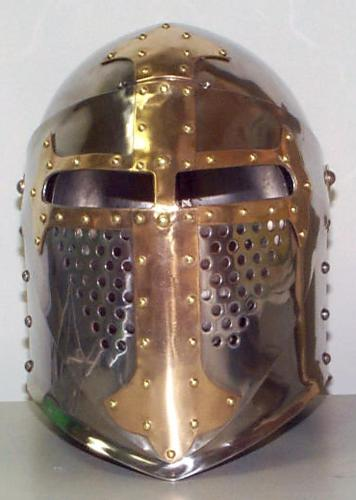
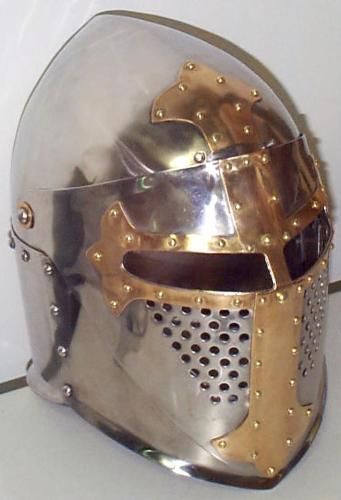
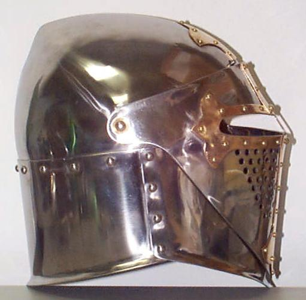
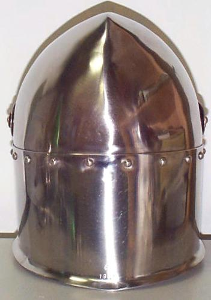
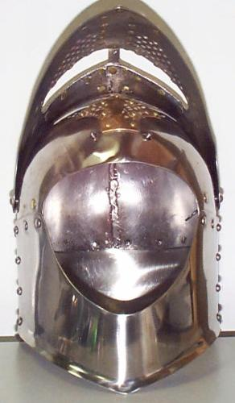

Sugar Loaf with Visor (c. Early 14th Century Style)





Notes:
The helm is made from 14
ga. 304 Stainless Steel with a 16 ga. red brass cross.
If I was going to make another
helm like this, I would move the visor's pivot point back 3/4 of an inch.
This is so that the visor can clear the point on the top of the helm and
rest on the back of the helm when open. Also I would move the seams between
the front plate and the back plate one inch farther toward the back. This
is so it's out of the way of the visor and puts the seams over the top
of the shoulder. If the helm wasn't going to be used with a camail I would
extend the front plate down another inch in the front and taper it back
to the seams between the front plate and the back plate.
The following examples of
visored sugarloaf helms (or early multi-section constructed bascinets)
can be found in Arms & Armour of the Crusading era 1050-1350
by David Nicolle.
Page 400 fig. 220a Manuscript, England early 14th century
(British Library, Ms. Roy. 16.G.VI, f.172, London, England)
Page 400 fig. 221 "The Luttrell Psalter" East Anglia
(England) 1340c.
(British Library, Ms. Add.42130, London, England)
Page 401 fig. 223b "Treatise of Walter de Milemete" London, c.1326
(British Library, Ms. Yates Thompson 14, f.7, London, England)
Page 452 fig. 537c "Mordred beseiges London",Roman de Saint Graal,
Flanders, early 14th century
(British Library, Ms.Add.10292, f.81b, London, England)
Finished Nov. 1999
would build this helmet in the following order:
1) Cut out the plates.
2) Finish the plate edges and corners.
3) Punch or drill any holes marked on the patterns
3) Dish and shape the top halves. (Read the FAQ
for instructions on dishing this type of top)
4) Weld the top halves together.
5) Grind the weld flush on the outside and cleanup weld
on the inside if needed.
6) Polish the helmet top to a medium finish. (I use 3M
surface conditioning disks)
7) Shape the back plate to fit the helm's top.
8) Polish the back plate to a medium finish.
9) Rivet the back plate onto the helm's top.
10) Shape the front plate to fit the helm.
11) Polish the front plate to a medium finish.
12) Rivet the front plate onto the helm.
13) Shape the visor and fit it to the helm.
14) Weld the brow part of the visor together. Grind welds flush on
the outside and cleanup welds on the inside if needed.
15) Fit the visor to the helm and mark where you want the two pivot
points.
16) Drill/Punch 1/4" holes for the two pivots.
17) I use 1/4" rivets for the pivots and drill 3/32" holes near the
end of the rivet shafts for cotter pins. This way I can remove the rivets
and change the visors. Be sure that the length of the rivets aren't excessive.
18) Polish the visor and brass plates for the cross to the finish you
want when the helm is done.
19) Rivet the arms of the brass cross over the eye slots.
20) Rivet on the main part of the brass cross. Be sure to use a steel
reinforcement strip under the part of the cross that goes over the eye
slot (between the eyes).
21) Rivet on the top part of the cross about 1/4" above where the top
edge of the visor is when closed.
22) Drill two holes for spring pins about an inch apart centered on
the center of the top edge of the visor.
23) Attach spring pins and adjust the holes for the pins as needed.
24) Finish polishing the helm.
Copyright 1999 Craig W. Nadler All rights reserved